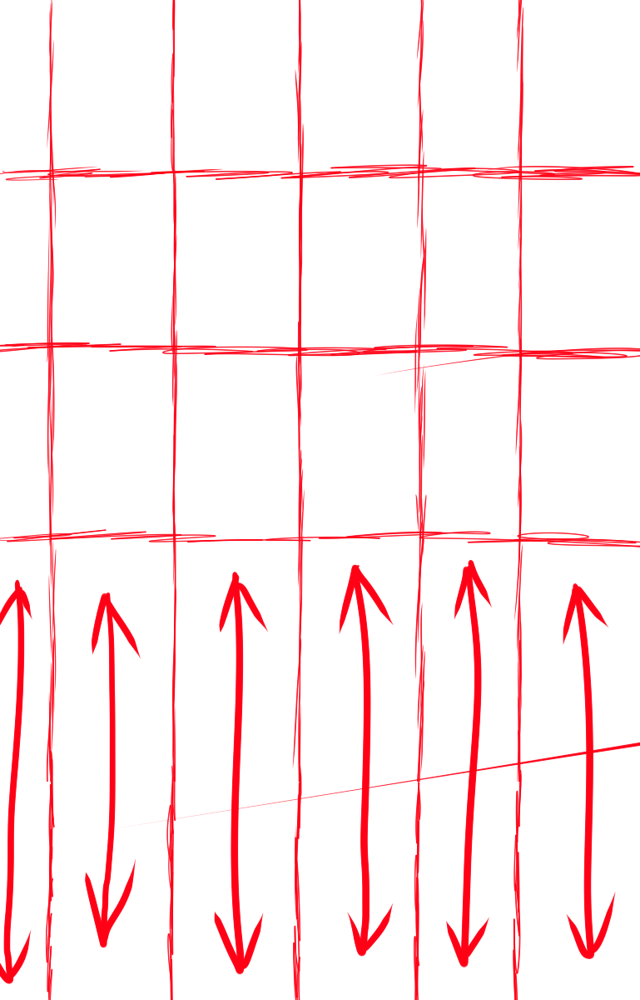

The goal of my site is to serve as a creative portfolio for my personal work in visual art, which I'll have more than plenty of to cover my site. My audience is anyone who might be interested in my work in any way, but more specifically for employers and other creatives to see my work and maybe reach out to collaborate, commission, or work with me in some other way. When it comes to my choices in design and organization, these goals inform my choices by pushing me to make my layout really pop with its uniqueness, and stand out in a way that really represents me, for those who are looking for artists to put to work.
<------
Original Layout
------>
Layout w/ grid
When my screen becomes thinner, I plan to extend it vertically by stretching out the text at the bottom, leaving everything else proportionate.
...and when it gets wider, I want it to keep the aspect ratio that was used on the original print layout, but zoomed as shown above.
This will change completely with the next part of the project, but at least for the sake of "build to spec" keeping it close to the original in that way looks the best stylistically in my humble opinion.
All in all, this first part of the project was a lot to handle, honestly. I delved into some things regarding CSS Grids that I've never experienced before, and managed to come to a product that was pretty close to the original layout and moved with the screen's bounds really well. The hardest part was figuring out how to make the text look good, even though there was absolutely no way for it to stay proportionate with screen sizings very much at all; it was very confusing, but in the end I came out on top and I feel good about it.
{kind=link}